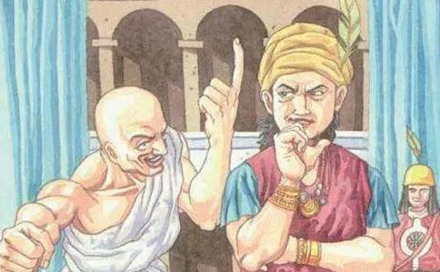

摩揭陀国的国王频婆娑罗王的王子叫阿阇世，他出生时有过一段奇特因缘。频婆娑罗王的夫人韦提希生下王子后，请相师观相，相师说此子将有杀父祸行。频婆娑罗王十分惊恐，就在婴儿出生时，把他从楼上抛下意欲跌死。但婴儿只是摔折了手指，活了下来。韦提希怜悯，带回抚养，取名为阿阇世，意为“未生怨”，是未生时已结怨之意。
阿阇世王子出生后并不知道这件事。后来
有一次，世尊示现病相，用了医师耆婆给的铁膏药。提婆达多想与世尊共享此药，但服药后反而生命垂危。在世尊加被下提婆达多保住了性命，但不知
在权臣的帮助下，阿阇世王子篡位，并将父王囚禁牢狱，不予提供饮食。为了不让频婆娑罗王饿死，韦提希王后沐浴后把酥蜜等涂到身上，又把
阿阇世王见父亲并未饿死，知道了事情原委，于是将韦提希王后也幽禁在了宫中。韦提希王后万念俱灰，也向世尊遥拜祈祷：“今我有难，世尊威重，无由得见，不敢相请，只愿您派目犍连和阿难二位尊者和我见上一面。”世尊知她的心愿，遣目犍连和阿难直达宫中，自己也从山中隐去，现在其前。韦提希极为
世尊眉放金光遍照十方，显现十方诸佛的净妙国土。又从口中发出五色祥光，穿透地牢直照频婆娑罗王的头顶，使其虽在幽困之中，却能见到
阿阇世王听说后大怒，派人砍掉了父王的双腿。不久，阿阇世王的儿子手指长出毒疮，阿阇世王吸出他指头里的脓血吐在地上。王后对他说：“你小时候也患过毒疮，父王用嘴吸吮你手上的脓血，为了不让你哭，把脓血咽进肚中。”阿阇世王问：“父王这么疼爱我吗？”王后道：“是的。”阿阇世王不禁后悔起来，于是宣布：“谁先来告诉我父王还活着，就把半壁江山赐给他。”众人奔向地牢，惊动了频婆娑罗王，他大叹一口气后死去，随即
但由于奸臣的教唆，阿阇世王继续与提婆达多狼狈为奸。提婆达多曾学得一点神变法门，此后便借助
佛陀见到阿阇世王，非常欢喜，阿阇世王祈求忏悔。佛陀进入“月爱三昧”，身放光明，犹如月光，照在阿阇世王身上，恶疮马上痊愈，顿感轻安无比。佛陀又为他传授三皈
众
有比丘问：“阿阇世王死后会到哪里去呢？”佛陀说：“他将来命终之后还是会堕地狱，但时间很短。他从地狱命终后当有二十劫不在恶道中
关于阿阇世王杀父的前因，《阿阇世王经》《大般
阿阇世王弃暗从明，而提婆达多依然执著于“自立门户”。某年僧团结夏安居期间，发生了灾荒，斋源成了问题。提婆达多向五百位有学比丘提供了三个月的供养后，说道：“你们之中谁不愿接受五戒并想脱离世尊的人，就跟随我吧。”五百比丘听后都跟随了提婆达多。目犍连和
于是目犍连展现神通，在空中现形说法，幻化种种神变，而
提婆达多看到自己造下无间罪过，知道死后会入地狱。但是他听信邪道，用珍珠收买了一个会礌术的人和五百礌手，另外埋伏了二百五十人，吩咐他们，如果礌石没有消灭世尊，就冲上去杀掉他。五百礌手准备就绪，但当他们看到世尊时，却都没敢发射，并偷偷逃跑了。
这时，世尊化现出一架梯子，他们都顺梯而下，来到了世尊面前，殷重忏悔，至诚皈依。那位礌师也带着珍珠逃跑了。提婆达多躲在一棵大树下久久听不见礌石的爆炸声，便带着另外五百人去察看缘由。当他看到众人已跑，只有礌架孤零零地躺在那里的情景后，怒不可遏，想带领着同来的五百人亲自发射礌石。世尊加持那五百随众令其逃走，自己却在那里等候。
金刚持委派药叉更跋罗护卫世尊。提婆达多发出礌石后，金刚持在空中用金刚杵将礌石击碎。一块碎石飞过世尊的头顶，击中药叉更跋罗，药叉当即毙命，死后生为天神，并来到世尊面前悟了道。另有一块碎礌石被布禄金刚接住，使他的头顶受了伤，世尊吩咐诸弟子立即给布禄金刚送去了治伤水。还有一块碎礌石击伤了世尊的脚，当场流血不止。
提婆达多犯了无间大罪，众人劝他到世尊面前请罪。他在压力下答应了此事，可去的时候又在指甲上涂了毒药，想寻机划伤世尊的脚底。当他跪拜时，世尊把脚化为水晶，使他欲划伤世尊的指甲折断了，也让他感到无地自容。只好说：“你不是说皈依佛陀就不会生恶趣吗？现在我要皈依你了，如果我生在恶趣，那么你的授记就是谎言。”话音刚落，他全身燃烧起来，
提婆达多由此深深感
原文标题：阿阇世王与提婆达多最后的结局竟然是这样
文章转自微信公众号：净宗书院